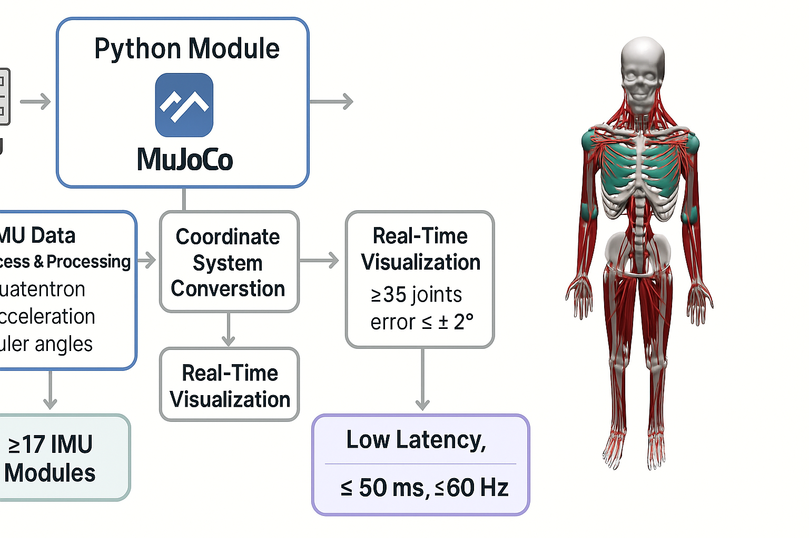
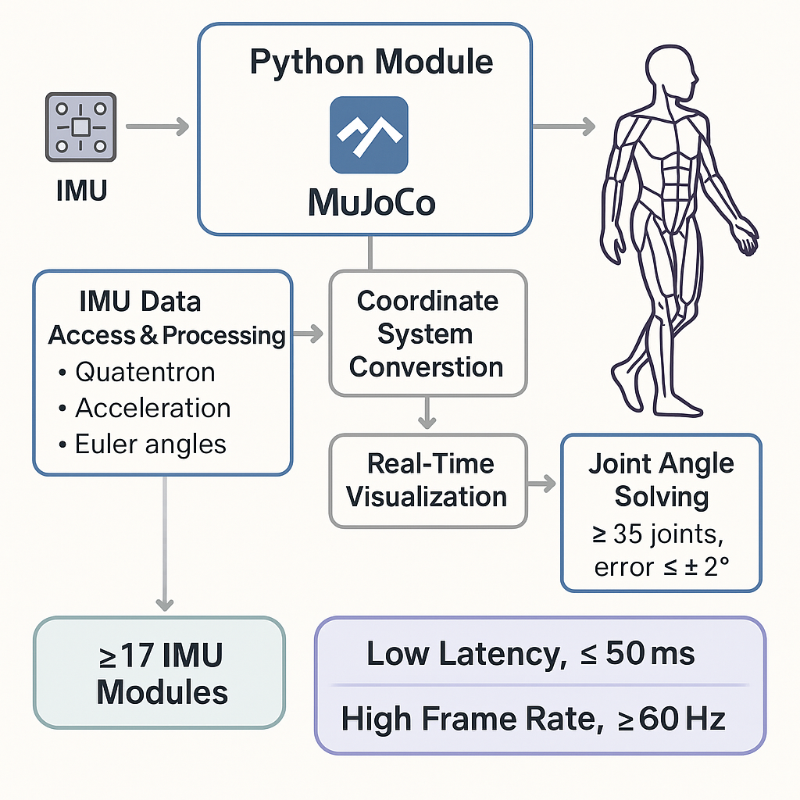

图1：IMU-MuJoCo运动跟踪系统架构图
基于物理引擎的实时骨骼驱动研究
基于惯性测量单元（IMU）的运动捕捉技术在人体运动分析领域具有重要应用价值。传统光学运动捕捉系统存在遮挡问题、环境要求高等限制，而IMU技术具有便携性好、不受环境光照影响等优势。
本研究旨在探索如何将IMU传感器数据与MuJoCo物理引擎结合，实现对人体骨骼运动的实时跟踪和仿真。通过多传感器数据融合和物理约束建模，提高运动捕捉的精度和可靠性。
系统通过17个IMU传感器采集人体运动数据，结合四元数解算和骨骼映射算法，驱动MuJoCo物理引擎中的数字人体模型，实现实时运动仿真。
系统基于惯性导航原理，通过多个IMU传感器同时采集人体不同部位的三轴加速度、三轴角速度和三轴磁场数据。这些原始数据经过卡尔曼滤波和四元数融合算法处理后，转换为各关节的旋转四元数。
四元数数据通过预训练的骨骼映射模型，映射到MuJoCo物理引擎中的人体骨骼模型。MuJoCo引擎基于刚体动力学和约束求解，实时计算骨骼模型的运动状态。


| 性能参数 | 指标值 | 说明 |
|---|---|---|
| 系统延迟 | ≤50ms | 从数据采集到运动显示的总延迟 |
| 更新频率 | ≥60Hz | 运动数据更新和显示频率 |
| 角度精度 | ≤±2° | 关节角度解算的绝对误差 |
| 传感器数量 | ≥17个 | 支持同时接入的IMU模块数量 |
| 关节覆盖 | ≥35个 | 可解算的关节角度数量 |
本研究在运动医学、虚拟现实、机器人控制等领域具有重要应用价值。通过提供高精度、实时的运动捕捉解决方案，可为相关领域的科研工作和技术发展提供支持。
项目已完成技术方案设计，正在进行核心算法开发和系统集成。预计将在2025年Q2完成全部开发工作。